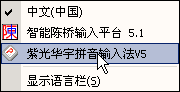
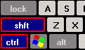
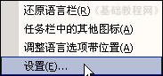
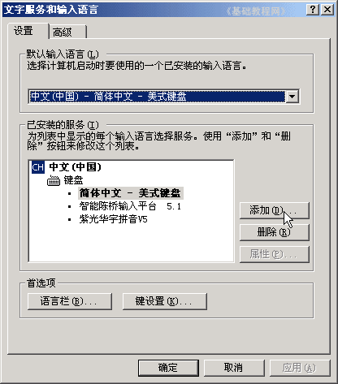
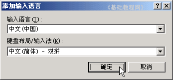
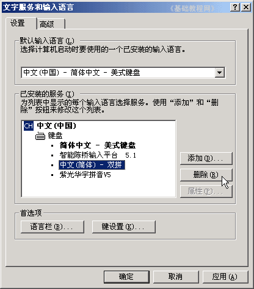

电脑操作基础
二十三、认识输入法 返回
在任务栏的右边有一个小键盘图标，这就是输入法，默认输入的是英文字母，点击可以选择汉字输入法；
1、切换输入法
1）瞄准任务栏上的小键盘点左键，在出来的菜单中选择一个输入法；

2）然后小键盘图标变成一个彩色小方块，同时还有一个输入法的工具条；
彩色的时候是中文，蓝色的时候是英文，大写A表示要按一下大写键Caps Lock；
3）使用键盘切换，同时按Ctrl和空格键，是中文和英文切换，同时按Ctrl和Shift键是各个输入法切换；

2、添加/删除输入法
1）在小键盘上点右键，选择“设置”，然后出来一个文字服务面板；

2）在中间点右边的“添加”按纽，出来一个小面板；

3）在小面板的第一行是添加其它国家的语言输入法，比如日语输入法，
点第二行是添加汉字输入法，选中“中文－双拼”后点确定，双拼输入法就添加好了；

4）删除输入法，在面板中选择一个输入法，比如双拼输入法，然后点右边的“删除”按纽，就可以删除它，
点“确定”按纽，关闭面板；

从控制面板进入的方法是：“开始－控制面板－日期、时间、语言和区域设置－区域和语言选项－语言－详细信息”
本节学习了在WinXP中输入法的基本知识，如果你成功地完成了练习，请继续学习下一课内容；
本教程由86团学校TeliuTe制作|著作权所有
基础教程网：http://teliute.org/
美丽的校园……
转载和引用本站内容，请保留版权信息和本站链接。